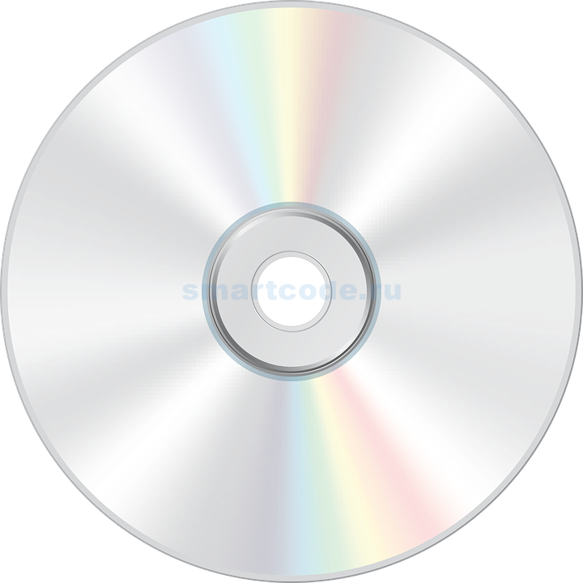

Сжатие дисков

Сжатие диска — технический прием, основанный на динамическом сжатии в процессе их записи на диск, а при считывании — их автоматическом восстановлении в исходную форму. Сжатие диска используется с целью увеличения емкости диска. В зависимости от характера записей емкость диска может быть увеличена примерно от 1, 5 до 5 раз, однако это замедляет машину особенно с медленными дисками.
В основе любого способа сжатия лежит модель источника данных, или, точнее, модель избыточности. Иными словами, для сжатия данных используются некоторые априорные сведения о том, какого рода данные сжимаются. Не обладая такими сведениями об источнике, невозможно сделать никаких предположений о преобразовании, которое позволило бы уменьшить объём сообщения. Модель избыточности может быть статической, неизменной для всего сжимаемого сообщения, либо строиться или параметризоваться на этапе сжатия (и восстановления). Коэффициент сжатия может быть как постоянным (некоторые алгоритмы сжатия звука, изображения и т. п., например А-закон, μ-закон, ADPCM, усечённое блочное кодирование), так и переменным. Во втором случае он может быть определён либо для каждого конкретного сообщения, либо оценён по некоторым критериям:
- Средний (обычно по некоторому тестовому набору данных);
- Максимальный (случай наилучшего сжатия);
- Минимальный (случай наихудшего сжатия);
Рекомендации
- Самой удобной программой для работы со сжатыми дисками, является встроенная утилита Windows, поскольку ее не нужно скачивать, и она единственная программа, которая сохранилась для нашего времени, если конечно не брать в расчет операционные системы 20-летней давности.